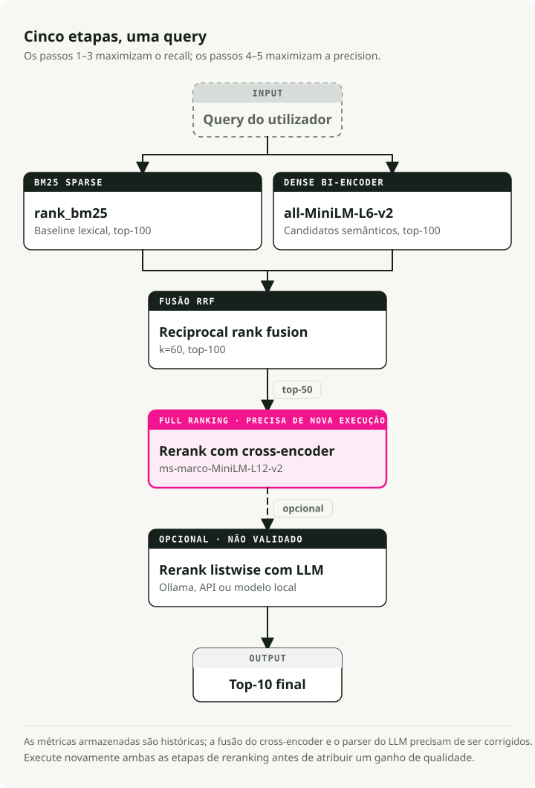
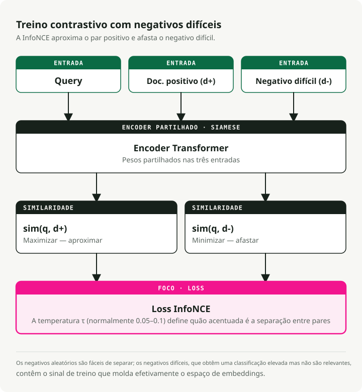
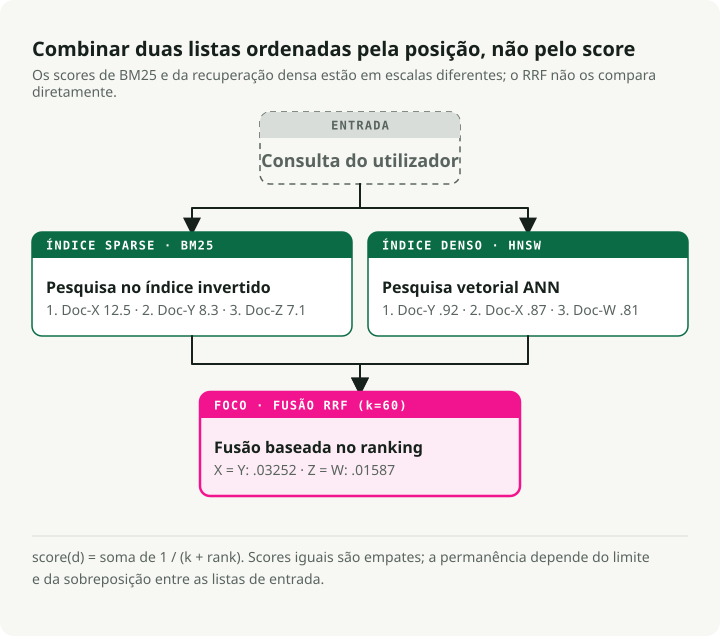
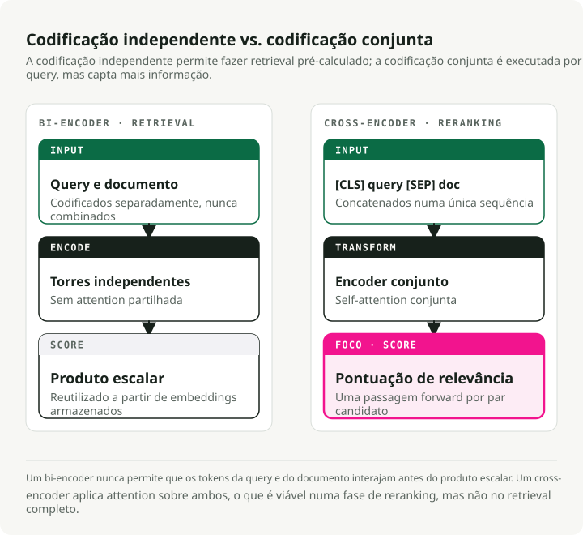
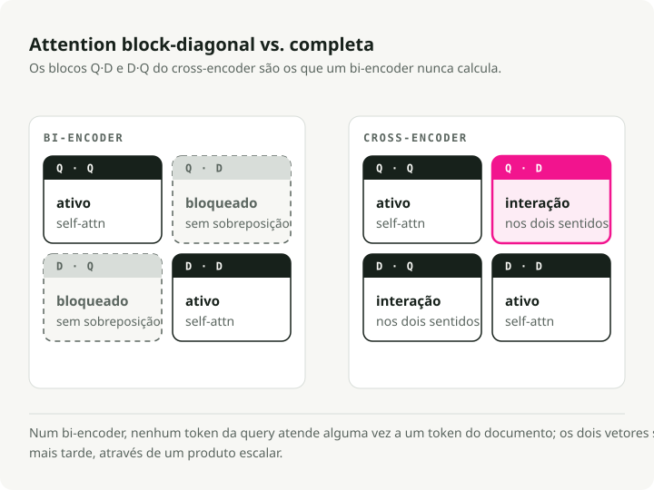
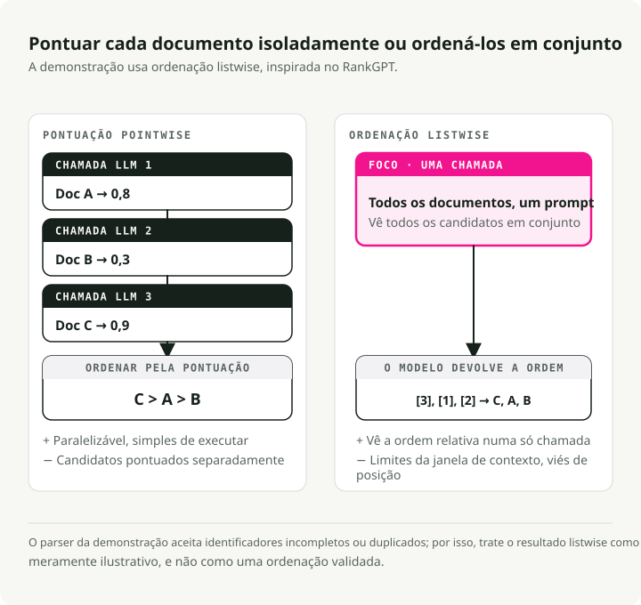
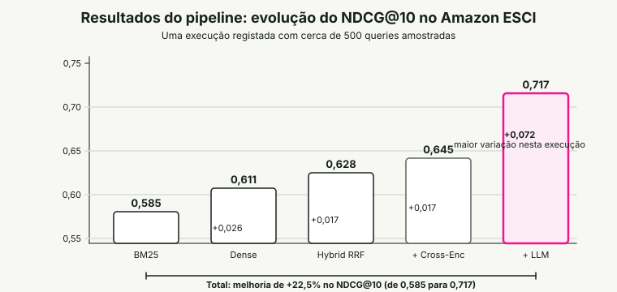
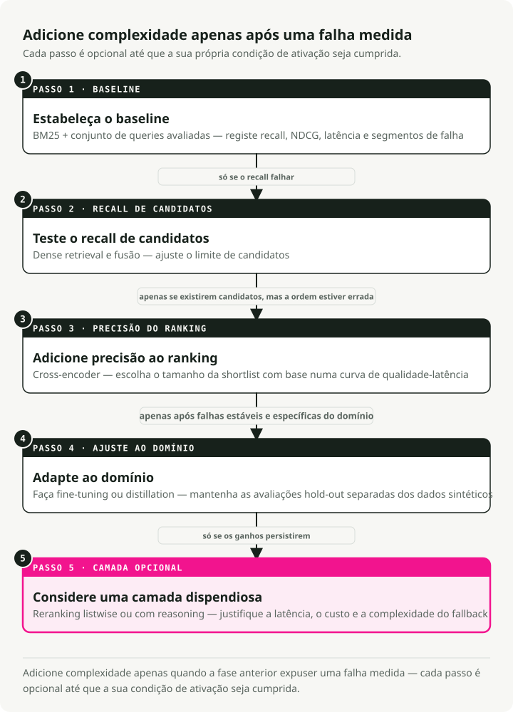

Tradução automática
Este artigo foi traduzido automaticamente a partir da versão original em inglês.
Search Ranking Stack em 2026: BM25, Embeddings, Cross-Encoders e Reranking com LLM
A pesquisa deixou de ser um problema de correspondência de strings há já algum tempo. Quando alguém escreve "wireless headphones" num motor de pesquisa de produtos, espera mais do que itens que contenham essas duas palavras. Quer o melhor resultado tendo em conta relevância semântica, qualidade do produto, preferências do utilizador e disponibilidade. O desfasamento entre o que o BM25 devolve e o que os utilizadores realmente querem mudou a forma como os sistemas de pesquisa são construídos.
Este artigo percorre uma stack moderna de ranking de pesquisa: um pipeline multi-etapas que combina recuperação esparsa com BM25, embeddings semânticos densos, reciprocal rank fusion, reranking com cross-encoder e ranking listwise com LLM. Construí uma demo funcional que faz benchmark de cada etapa no dataset de pesquisa de produtos Amazon ESCI, para que a contribuição de cada camada apareça em números reais.
TL;DR: Um pipeline híbrido multi-etapas é a opção por defeito mais adequada para produção. Execute BM25 e recuperação densa em paralelo, combine-os com Reciprocal Rank Fusion, faça reranking dos sobreviventes com um cross-encoder e deixe um LLM tratar da camada final de precisão. No benchmark Amazon ESCI isto dá uma melhoria de 22.5% em NDCG@10 face ao BM25 isolado (0.585 para 0.717). O reranker LLM contribui com o maior salto individual (+0.072).
Como chegámos aqui
O ranking de pesquisa passou por três fases aproximadas, cada uma a corrigir uma limitação específica do que existia antes. A stack moderna só faz sentido se se perceber o percurso que a trouxe até aqui.
BM25 e recuperação lexical
Durante décadas, o BM25 foi a opção por defeito. É um modelo probabilístico que pontua documentos pela frequência dos termos da query no documento, normalizada pelo comprimento do documento e pela frequência inversa do documento (IDF).
O BM25 é excelente em correspondência exata de palavras-chave. Procurar um código de erro específico, um SKU de produto ou um código de estado HTTP funciona porque o sistema só precisa de sobreposição literal de tokens. O problema é o problema de mismatch de vocabulário: uma query por "cheap laptop" falha documentos sobre "budget notebook computer" porque as palavras não coincidem. O BM25 não tem qualquer noção de intenção semântica.
Ainda assim, o BM25 é uma baseline sólida. Obtém 0.429 de nDCG@10 médio nas 18 datasets do benchmark BEIR e continua a superar alguns modelos neuronais em tarefas de recuperação argumentativa como Touche-2020.
Recuperação densa e embeddings
BERT e o Transformer trouxeram a recuperação densa. Em vez de corresponder palavras-chave, mapeia-se tanto a query como os documentos para um espaço vetorial partilhado de alta dimensionalidade (tipicamente 768 ou 1024 dimensões). A relevância passa a ser a similaridade cosseno entre dois vetores.
A arquitetura bi-encoder (ou "two-tower") processa a query e o documento de forma independente em torres de encoder separadas, produzindo embeddings de comprimento fixo. Os vetores dos documentos podem ser pré-computados e indexados offline, sendo depois recuperados rapidamente via algoritmos de Approximate Nearest Neighbor (ANN). Agora "cheap laptop" e "budget notebook" ficam próximos no espaço vetorial.
Por baixo, os bi-encoders usam uma arquitetura siamesa (Sentence-BERT, Reimers & Gurevych, EMNLP 2019): ambas as torres partilham os mesmos pesos do Transformer. Cada torre processa o seu texto de entrada e depois faz mean-pooling dos estados ocultos ao nível do token para um único vetor de comprimento fixo (384 ou 768 dimensões são comuns). A partilha de pesos coloca queries e documentos no mesmo espaço semântico, que é o que torna a similaridade cosseno significativa em primeiro lugar.
Estes modelos são treinados com aprendizagem contrastiva, normalmente com a loss InfoNCE. Dado um batch de pares (query, positive_document), o objetivo maximiza sim(query, positive_doc) enquanto minimiza sim(query, negative_docs). Os negativos vêm dos positivos de outras queries no mesmo batch (in-batch negatives). Um parâmetro de temperatura \(\\tau\) controla o quão aguda é a distribuição: valores mais baixos forçam o modelo a fazer distinções mais difíceis entre positivos e negativos.
A maior alavanca para o desempenho de um bi-encoder é a qualidade dos dados de treino. Os modelos começam com pares (query, positive_document) de datasets como MS MARCO, e depois são aumentados com hard negatives — documentos que o modelo atual classifica alto mas que na realidade não são relevantes. Negativos aleatórios são demasiado fáceis e não dão nada ao modelo para aprender. Hard negatives forçam-no a aprender distinções subtis. O framework SimANS (Zhou et al., EMNLP 2022) formaliza isto: excluir negativos fáceis (rank demasiado baixo) e potenciais falsos negativos (rank demasiado alto), e treinar no "meio difícil".
O custo é o bottleneck de representação. Os bi-encoders comprimem toda a nuance semântica num único vetor de dimensão fixa, por isso falham muitas vezes interações de grão fino entre termos específicos da query e conteúdo específico do documento.
Cross-encoders e LLMs
Cross-encoders (Nogueira & Cho, 2019) alimentam a query e o documento num Transformer em conjunto como uma sequência concatenada ([CLS] Query [SEP] Document), para que cada token da query possa atender a cada token do documento através de self-attention completa. Essa interação profunda capta nuances que a codificação independente falha.
O reranking com LLM leva isto mais longe. Um large language model atua como um ranker listwise zero-shot — na prática, um juiz humano que consegue raciocinar sobre porque um documento é melhor do que outro. RankGPT (Sun et al., EMNLP 2023 Outstanding Paper) mostrou que o GPT-4 como reranker listwise zero-shot iguala ou supera métodos supervisionados.
A precisão é forte. O custo também. Não é possível pré-computar scores, e a inferência é 100x mais lenta do que recuperação com bi-encoder. É esse custo que força o padrão arquitetural que se vê na pesquisa moderna: o funil multi-etapas.
O funil multi-etapas
Executar um cross-encoder ou LLM caro sobre milhões de documentos não é viável, por isso as stacks modernas de pesquisa usam um funil. Cada etapa reduz o conjunto de candidatos enquanto a complexidade do modelo aumenta.
Uma pesquisa de etapa única é ou demasiado lenta (modelos complexos sobre tudo) ou demasiado imprecisa (modelos simples em todo o lado). O funil encontra o meio-termo, e é a disposição padrão em produção à escala.
| Etapa | Conjunto de Candidatos | Objetivo Principal | Complexidade do Modelo | Orçamento de Latência |
|---|---|---|---|---|
| Retrieval | 10^9 - 10^12 | Recall Máximo | Baixa (BM25, Bi-Encoders) | < 50ms |
| Pre-Ranking | 10^4 - 10^5 | Filtragem Eficiente | Média (Two-Tower, GBDT) | < 100ms |
| Full Ranking | 10^2 - 10^3 | Precisão Máxima | Alta (Cross-Encoders, LLMs) | < 500ms |
| Blending | 10^1 - 10^2 | Diversidade e Safety | Regras e Multi-Objective | < 20ms |
A recuperação define o teto e o reranking otimiza dentro dele. Se um documento relevante não sobreviver à recuperação, nenhum modelo a jusante o consegue recuperar.
A demo: um pipeline de cinco etapas
Para tornar isto concreto, construí uma demo search-ranking-stack que executa um pipeline de cinco etapas sobre o benchmark de pesquisa de produtos Amazon ESCI. Cada etapa é medida de forma independente para se perceber de onde vêm realmente os ganhos.

O pipeline:
- BM25 Sparse Retrieval — baseline lexical (rank_bm25)
- Dense Bi-Encoder Retrieval — pesquisa semântica (all-MiniLM-L6-v2)
- Hybrid RRF Fusion — combina resultados esparsos e densos
- Cross-Encoder Reranking — scoring de relevância de grão fino (ms-marco-MiniLM-L-12-v2)
- LLM Listwise Reranking — ranking final com capacidade de raciocínio (Ollama / Claude / local)
As etapas 1--3 são a fase de retrieval do funil (maximizar recall); as etapas 4--5 são a fase de full ranking (maximizar precisão). A demo omite pre-ranking e blending. Com ~8.500 documentos, é viável enviar todos os resultados híbridos diretamente para reranking.
Quick Start
git clone https://github.com/slavadubrov/search-ranking-stack.git
cd search-ranking-stack
uv sync
# Download and sample ESCI dataset (~2.5GB download, ~5MB sample)
uv run download-data
# Run the full pipeline (without LLM reranking)
uv run run-all
# Run with LLM reranking via Ollama
uv run run-all --llm-mode ollama
O Dataset: Amazon ESCI
A demo usa o Amazon Shopping Queries Dataset (ESCI) da KDD Cup 2022 — um benchmark real de pesquisa de produtos com labels de relevância graduada em quatro níveis:
| Label | Gain | Significado | Exemplo (Query: "wireless headphones") |
|---|---|---|---|
| Exact (E) | 3 | Satisfaz todos os requisitos da query | Sony WH-1000XM5 Wireless Headphones |
| Substitute (S) | 2 | Alternativa funcional | Wired headphones with Bluetooth adapter |
| Complement (C) | 1 | Item útil relacionado | Headphone carrying case |
| Irrelevant (I) | 0 | Sem relação significativa | USB charging cable |
A relevância graduada importa porque permite usar NDCG (Normalized Discounted Cumulative Gain), que separa um ranking "perfeito" de um "meramente adequado". Métricas binárias tratam ambos como igualmente relevantes e não conseguem distinguir diferentes níveis de relevância na mesma posição.
Amostrei ~500 queries "difíceis" (o flag small_version no ESCI) com ~8.500 produtos e ~12.000 julgamentos. Pequeno o suficiente para correr num portátil em minutos, grande o suficiente para dar resultados estatisticamente significativos.
Retrieval: pesquisa híbrida
A função da camada de retrieval é maximizar o recall — lançar a rede o mais longe possível para que nada de relevante escape.
BM25: a baseline lexical
O BM25 pontua documentos pela sobreposição de termos com a query, com saturação da frequência do termo e normalização pelo comprimento do documento:
Onde \(\\text{IDF}(t)\) é a frequência inversa do documento do termo \(t\), \(tf(t,d)\) é a frequência do termo no documento \(d\), \(|d|\) é o comprimento do documento, e \(\\text{avgdl}\) é o comprimento médio dos documentos no corpus. Dois parâmetros importam: \(k_1\) (tipicamente 1.2--2.0) controla a saturação de TF — quão rapidamente termos repetidos deixam de acrescentar valor — e \(b\) (tipicamente 0.75) controla a normalização pelo comprimento do documento.
A implementação é curta. Tokenização simples por whitespace com rank_bm25:
# src/search_ranking_stack/stages/s01_bm25.py
from rank_bm25 import BM25Okapi
def run_bm25(data: ESCIData, top_k: int = 100):
doc_ids = list(data.corpus.keys())
tokenized_corpus = [text.lower().split() for text in data.corpus.values()]
bm25 = BM25Okapi(tokenized_corpus)
results = {}
for query_id, query_text in data.queries.items():
scores = bm25.get_scores(query_text.lower().split())
top_indices = np.argsort(scores)[::-1][:top_k]
results[query_id] = {doc_ids[idx]: float(scores[idx]) for idx in top_indices}
return results
O BM25 chega a Recall@100 de 0.741 — 74% dos produtos relevantes aparecem algures no top 100. Nada mau para um método puramente lexical, mas 26% dos itens relevantes ficam invisíveis para todas as etapas a jusante.
Dense Bi-Encoder: Retrieval Semântico
O bi-encoder mapeia queries e documentos de forma independente para um espaço de embeddings partilhado:
# src/search_ranking_stack/stages/s02_dense.py
from sentence_transformers import SentenceTransformer
model = SentenceTransformer("sentence-transformers/all-MiniLM-L6-v2")
# Encode corpus once, cache to disk
corpus_embeddings = model.encode(
doc_texts,
batch_size=128,
normalize_embeddings=True, # Cosine sim = dot product
convert_to_numpy=True,
)
# At query time: encode query, compute dot product
query_embeddings = model.encode(query_texts, normalize_embeddings=True)
similarity_matrix = np.dot(query_embeddings, corpus_embeddings.T)
Com embeddings normalizados, a similaridade cosseno reduz-se a um dot product — uma única multiplicação de matrizes recupera todas as queries de uma vez. O modelo de 22M de parâmetros all-MiniLM-L6-v2 corre confortavelmente em CPU e eleva o Recall@100 para 0.825, uma melhoria de 11% face ao BM25.
Como os bi-encoders aprendem boas representações
O treino de bi-encoders decorre normalmente em duas fases. Primeiro, o modelo é pré-treinado em datasets de Natural Language Inference (NLI) e Semantic Textual Similarity (STS), que ensinam entendimento semântico de uso geral — o modelo aprende que "a cat sits on a mat" e "a feline rests on a rug" devem ter embeddings semelhantes. Depois, é fine-tuned em dados específicos de retrieval como o MS MARCO, onde aprende que uma query de pesquisa e a sua passagem relevante devem ficar mais próximas do que a query e passagens irrelevantes.
O ingrediente crítico na segunda fase é hard negative mining. Negativos aleatórios (por exemplo, um documento sobre culinária emparelhado com uma query sobre headphones) são trivialmente fáceis de distinguir — o modelo não aprende nada com eles. Em vez disso, usa-se o próprio modelo atual para encontrar documentos que ele classifica alto mas que na realidade não são relevantes.
A abordagem SimANS (Simple Ambiguous Negatives Sampling) formaliza isto: classificar todos os documentos com o bi-encoder atual, depois excluir negativos fáceis (rank demasiado baixo — o modelo já os trata bem) e potenciais falsos negativos (rank demasiado alto — podem na realidade ser relevantes mas não estar anotados). O "meio difícil" produz o máximo sinal de aprendizagem.
# What a training triplet looks like after hard negative mining
training_triplet = {
"query": "wireless noise canceling headphones",
"positive": "Sony WH-1000XM5 Wireless Noise Cancelling Headphones",
"negative": "Sony headphone replacement ear pads", # Hard negative: same brand, related product, but wrong intent
}
# The bi-encoder must learn that "ear pads" is NOT what the user wants,
# even though it shares many tokens with the positive document.
A função de loss contrastiva (InfoNCE) liga tudo isto. Para cada query \(q\) com documento positivo \(d^+\) e um conjunto de documentos negativos \(\\{d^-_1, \\ldots, d^-_n\\}\):
Onde \(\\text{sim}(q, d)\) é a similaridade cosseno entre os embeddings da query e do documento, e \(\\tau\) é o parâmetro de temperatura (tipicamente 0.05--0.1) que controla o quão aguda é a distribuição — valores mais baixos tornam a loss mais sensível a hard negatives. É basicamente uma softmax cross-entropy: empurrar a similaridade do par positivo para cima relativamente a todos os negativos. Quando \(\\tau\) é pequeno, mesmo diferenças ligeiras de similaridade produzem gradientes grandes, o que força o modelo a fazer distinções mais finas.

Servir embeddings de bi-encoder à escala
A vantagem arquitetural dos bi-encoders é a separação limpa entre offline/online. Todos os embeddings dos documentos são calculados uma vez no momento de indexação e armazenados num índice vetorial. No momento da query, só a query precisa de uma única forward pass pelo encoder (~5ms), seguida de uma pesquisa ANN sobre embeddings pré-computados (~10ms). Essa assimetria é o que torna a recuperação densa prática à escala.
Na demo, a matemática é modesta: 8.500 documentos \(\\times\) 384 dimensões \(\\times\) 4 bytes por float = ~13 MB de embeddings. À escala de produção os números deixam de ser modestos: 1 bilião de documentos com embeddings de 768 dimensões precisam de ~3 TiB de armazenamento. É aí que entram quantization (compressão de floats de 32 bits para inteiros de 8 bits), product quantization (decomposição de vetores em subespaços), e índices assentes em SSD como DiskANN. A secção Vector Indexing: HNSW vs. IVF cobre os algoritmos de indexação.
Porque híbrido: BM25 e denso têm falhas complementares
Nenhum dos métodos sozinho é suficiente. O BM25 ganha em nomes próprios, SKUs específicos de produto e códigos de erro — "iPhone 15 Pro Max 256GB" precisa de correspondência exata de tokens. A recuperação densa ganha em mismatch de vocabulário — "cheap laptop" corresponder a "budget notebook computer" precisa de entendimento semântico.
A correção padrão é a pesquisa híbrida: executar ambos os métodos de retrieval em paralelo e depois fundir os resultados.
Reciprocal Rank Fusion (RRF)
O desafio da pesquisa híbrida é que BM25 e recuperação densa produzem scores em escalas completamente diferentes. Os scores do BM25 não têm limite superior (0 a 100+), e a similaridade cosseno está limitada entre -1 e 1. Uma combinação linear simples precisa de ajuste contínuo para se manter estável.

Reciprocal Rank Fusion (Cormack et al., 2009) ignora totalmente scores brutos e usa apenas a posição no ranking:
Onde \(k\) é uma constante de suavização (tipicamente 60) que reduz o domínio de outliers. O RRF recompensa itens que ficam consistentemente perto do topo em ambos os métodos, mesmo que um sistema lhes atribua scores muito mais altos do que o outro. Ao passar para uma abordagem baseada em rank, o problema de mismatch de escalas desaparece.
A implementação:
# src/search_ranking_stack/stages/s03_hybrid_rrf.py
def reciprocal_rank_fusion(ranked_lists, k=60, top_k=100):
fused_results = {}
for query_id in all_query_ids:
rrf_scores = defaultdict(float)
for results in ranked_lists:
sorted_docs = sorted(results[query_id].items(),
key=lambda x: x[1], reverse=True)
for rank, (doc_id, _score) in enumerate(sorted_docs, start=1):
rrf_scores[doc_id] += 1.0 / (k + rank)
sorted_rrf = sorted(rrf_scores.items(),
key=lambda x: x[1], reverse=True)[:top_k]
fused_results[query_id] = dict(sorted_rrf)
return fused_results
O RRF híbrido chega a Recall@100 de 0.842 e NDCG@10 de 0.628 — superando tanto BM25 (0.585) como Dense (0.611) isoladamente. Os documentos só precisam de ter boa classificação em um dos métodos para sobreviver à fusão.
Reranking com cross-encoder
Com 100 candidatos híbridos por query, já é possível usar um modelo mais caro. O cross-encoder processa a query e o documento em conjunto através de um único Transformer, com cross-attention completa entre todos os tokens.

Porque a cross-attention importa
A diferença real está na matriz de atenção. Num bi-encoder, a atenção é block-diagonal: tokens da query só atendem a outros tokens da query, e tokens do documento só atendem a outros tokens do documento. As duas representações nunca se encontram ao nível do token — só se cruzam no fim através de um dot product. Um cross-encoder calcula a matriz de atenção completa, onde cada token da query atende a cada token do documento e vice-versa. É essa cross-attention que desbloqueia interação profunda ao nível do token.

Num bi-encoder, a query "apple" produz o mesmo embedding todas as vezes. É codificada independentemente, antes de qualquer documento ser visto. Um cross-encoder vê query e documento em simultâneo, pelo que consegue resolver ambiguidade em contexto. As vantagens vão muito para além da polissemia:
- Negação: uma query por "headphones that are not wireless" — embeddings de bi-encoder para "not wireless" são quase idênticos a "wireless" porque a negação mal altera o vetor mean-pooled. Um cross-encoder vê o token "not" a atender diretamente a "wireless" e pontua corretamente headphones com fio mais alto.
- Qualificação: uma query por "laptop under \\(500" — a restrição de preço modifica a relevância. Um cross-encoder consegue atender de "\\\)500" ao preço mencionado na descrição do produto e verificar se a restrição é satisfeita.
A entrada do cross-encoder é formatada como [CLS] query tokens [SEP] document tokens [SEP]. [CLS] é um token de classificação cujo estado oculto final é passado por uma cabeça linear para produzir um único score de relevância. Segment embeddings distinguem tokens da query de tokens do documento, e [SEP] marca a fronteira entre segmentos.
Como os cross-encoders são treinados
O treino de cross-encoders é conceptualmente mais simples do que o de bi-encoders. O modelo recebe triplos (query, document, relevance_label) e aprende a prever o label através de supervised learning simples — não é necessária loss contrastiva.
# Cross-encoder training data format
training_example = {
"query": "wireless headphones",
"document": "Sony WH-1000XM5 Wireless Headphones",
"label": 1.0, # Relevant
}
# Forward pass: [CLS] hidden state → Linear layer → sigmoid → score
# Loss: binary cross-entropy between predicted score and label
A cabeça de classificação fica em cima do estado oculto final do token [CLS]: uma única camada linear mapeia a dimensão oculta para um escalar, seguida de um sigmoid. Para labels binários de relevância, binary cross-entropy loss funciona; para labels graduados como a escala de quatro níveis do ESCI, MSE loss funciona melhor porque preserva a relação ordinal entre graus.
Hard negative mining importa ainda mais para cross-encoders do que para bi-encoders. Cross-encoders são caros de treinar — cada exemplo de treino precisa de uma forward pass completa pela sequência concatenada — por isso não se pode desperdiçar compute com negativos trivialmente fáceis. A receita prática: usar um bi-encoder para recuperar os top-K candidatos para cada query de treino, depois extrair hard negatives de intervalos específicos de ranking (por exemplo, ranks 10–100). Isso dá ao cross-encoder exemplos em que distinguir relevante de irrelevante requer realmente interação profunda ao nível do token.
# src/search_ranking_stack/stages/s04_cross_encoder.py
from sentence_transformers import CrossEncoder
model = CrossEncoder("cross-encoder/ms-marco-MiniLM-L-12-v2")
def run_cross_encoder(data, hybrid_results, top_k_rerank=50):
for query_id, query_text in data.queries.items():
candidates = list(hybrid_results[query_id].items())[:top_k_rerank]
# Form (query, document) pairs for joint encoding
pairs = []
doc_ids = []
for doc_id, _ in candidates:
doc_text = data.corpus.get(doc_id, "")[:2048]
pairs.append([query_text, doc_text])
doc_ids.append(doc_id)
# Score all pairs with full cross-attention
scores = model.predict(pairs, batch_size=64)
# Rerank by cross-encoder score
scored_docs = sorted(zip(doc_ids, scores),
key=lambda x: x[1], reverse=True)
reranked_results[query_id] = {
doc_id: float(score) for doc_id, score in scored_docs
}
O modelo de 33M de parâmetros ms-marco-MiniLM-L-12-v2 demora em média cerca de 100ms por query em CPU para 50 candidatos. O NDCG@10 sobe para 0.645 — um sólido +0.017 sobre o retrieval híbrido.
O tradeoff velocidade-qualidade
Porque não usar cross-encoders para tudo? Porque a pré-computação é impossível. Os embeddings de documentos de um bi-encoder são independentes da query, por isso são calculados uma vez e armazenados. O output de um cross-encoder depende da query e do documento em conjunto. O score de relevância para "wireless headphones" emparelhado com um produto Sony vem da cross-attention completa entre esses tokens específicos. Não é possível colocá-lo em cache nem reutilizá-lo para uma query diferente.
A diferença de custo é acentuada. Uma recuperação com bi-encoder precisa de 1 forward pass (para codificar a query) mais N dot products contra embeddings de documentos pré-computados — os dot products são trivialmente baratos. Um cross-encoder precisa de N forward passes completos pelo Transformer, cada um a processar a sequência concatenada query + documento com custo \(O(L^2)\) para comprimento combinado de sequência \(L\). Para 50 candidatos com comprimento combinado médio de 128 tokens, isso são 50 forward passes separados por 12 camadas Transformer. Para 100.000 candidatos, estamos a falar de minutos numa GPU moderna versus ~17ms para um bi-encoder.
A regra que a demo confirma: Recall@100 mantém-se plano em 0.842 nas duas etapas de reranking. O reranking pode reordenar resultados, mas nunca adicionar documentos. A recuperação define o teto.
Reranking listwise com LLM
A etapa final usa um LLM para reranking listwise. Em vez de pontuar cada documento independentemente (pointwise), o LLM vê todos os resultados top-10 de uma vez e produz um ranking completo. Esta abordagem, inspirada em RankGPT, permite ao modelo comparar produtos entre si — algo que os modelos pointwise não conseguem fazer.

O prompt listwise
O template do prompt pede ao LLM para considerar a hierarquia de relevância do ESCI:
# src/search_ranking_stack/stages/s05_llm_rerank.py
def _create_listwise_prompt(query, documents, max_words=200):
n = len(documents)
doc_texts = []
for i, (doc_id, doc_text) in enumerate(documents, start=1):
words = doc_text.split()[:max_words]
doc_texts.append(f"[{i}] {' '.join(words)}")
return (
f"I will provide you with {n} product listings, each indicated by "
f"a numerical identifier [1] to [{n}]. Rank the products based on "
f'their relevance to the search query: "{query}"\n\n'
"Consider:\n"
"- Exact matches should rank highest\n"
"- Substitutes should rank above complements\n"
"- Irrelevant products should rank lowest\n\n"
f"{chr(10).join(doc_texts)}\n\n"
"Output ONLY a comma-separated list of identifiers: [3], [1], [2], ...\n"
"Do not explain your reasoning."
)
Três modos de execução
A demo suporta três backends para reranking com LLM:
| Mode | Model | Como corre |
|---|---|---|
ollama |
llama3.2:3b (configurável) |
Local via Ollama API |
api |
claude-haiku-4-5-20251001 |
Anthropic API |
local |
Qwen/Qwen2.5-1.5B-Instruct |
HuggingFace Transformers |
Parsing e fallback
Os outputs de LLM não são determinísticos, por isso parsing robusto e um caminho de fallback são importantes:
def _parse_ranking(output: str, n: int) -> list[int] | None:
"""Parse LLM output to extract ranking order."""
matches = re.findall(r"\[(\d+)\]", output)
if not matches:
return None
positions = [int(m) - 1 for m in matches]
# Pad with remaining positions if LLM returned partial output
if len(positions) < n:
seen = set(positions)
for i in range(n):
if i not in seen:
positions.append(i)
return positions[:n]
Se o parsing falhar totalmente, o sistema recua para a ordenação do cross-encoder. Qualquer integração de LLM em produção precisa desse tipo de caminho de fallback — não se quer que uma falha de parsing deite os resultados abaixo da etapa anterior.
Resultados: cada etapa justifica-se
Aqui estão os resultados de executar o pipeline completo em ~500 queries ESCI:

| Stage | NDCG@10 | MRR@10 | Recall@100 | Delta NDCG |
|---|---|---|---|---|
| BM25 | 0.585 | 0.812 | 0.741 | -- |
| Dense Bi-Encoder | 0.611 | 0.808 | 0.825 | +0.026 |
| Hybrid (RRF) | 0.628 | 0.834 | 0.842 | +0.017 |
| + Cross-Encoder | 0.645 | 0.860 | 0.842 | +0.017 |
| + LLM Reranker | 0.717 | 0.901 | 0.842 | +0.072 |
Observações principais
A pesquisa híbrida supera qualquer um dos métodos isoladamente. O NDCG do RRF (0.628) fica acima tanto do BM25 (0.585) como do Dense (0.611). Retrieval esparso e denso têm modos de falha complementares, e combiná-los recupera documentos que seriam perdidos por qualquer um deles isoladamente.
O recall é definido na recuperação. Recall@100 mantém-se plano em 0.842 nas duas etapas de reranking. Os rerankers reordenam, não adicionam documentos. Se quer mais recall, corrija a camada de retrieval.
O reranker LLM fornece o maior salto individual. O ganho de +0.072 em NDCG@10 do cross-encoder para o reranker LLM é a maior melhoria de etapa única no pipeline. O LLM consegue raciocinar sobre relevância de produto — perceber que um "wireless headphone stand" é um complemento, não uma correspondência — e esse tipo de discriminação escapa aos modelos estatísticos.
Dense supera BM25 neste dataset. O domínio de pesquisa de produtos do ESCI tem mismatch de vocabulário severo (os utilizadores dizem "cheap laptop"; os produtos dizem "budget notebook computer"), o que favorece os pontos fortes da recuperação semântica.
Avaliação: medir o que importa
A demo usa três métricas complementares. Cada uma olha para o ranking de um ângulo diferente:
NDCG@10 (métrica principal)
Normalized Discounted Cumulative Gain mede a qualidade do ranking top-10 usando relevância graduada. Recompensa colocar documentos altamente relevantes perto do topo com um desconto logarítmico:
O NDCG é a única métrica que usa totalmente a relevância graduada em quatro níveis do ESCI — um sistema que coloca uma correspondência Exact na posição 1 pontua mais alto do que outro que coloca aí uma Substitute. É por isso que é a métrica principal para a qualidade global da pesquisa.
MRR@10 (experiência do utilizador)
Mean Reciprocal Rank mede quão depressa o utilizador encontra o primeiro resultado relevante. Se o primeiro resultado relevante estiver na posição 1, MRR = 1.0. Na posição 3, o reciprocal rank é 0.333. Capta o "tempo até satisfação" — mesmo que o NDCG seja alto, os utilizadores preocupam-se sobretudo com o primeiro bom resultado.
Recall@100 (cobertura de retrieval)
O recall mede que fração de todos os documentos relevantes aparece algures no top-100. É uma métrica de teto — se um documento relevante não for recuperado, nenhum reranker o consegue corrigir.
Indexação vetorial: HNSW vs. IVF
Embeddings densos só se tornam úteis à escala quando existe um índice de Approximate Nearest Neighbor (ANN). A demo usa similaridade cosseno brute-force (o que é aceitável com ~8.500 documentos), mas sistemas de produção precisam de índices especializados.
HNSW (Hierarchical Navigable Small World)
HNSW (Malkov & Yashunin, 2016) é uma escolha comum para ambientes de produção que precisam de latência abaixo dos 100ms. Constrói um grafo multi-camada onde as camadas superiores fornecem ligações "express" para navegação grosseira e as inferiores fornecem ligações densas para refinamento preciso. Parâmetros principais de tuning: M (ligações por nó, tipicamente 16–64) e efSearch (largura do beam em tempo de query — usar pelo menos 512 para metas de recall acima de 0.95).
A fraqueza do HNSW é o problema das tombstones: quando os registos são apagados, deixam nós fantasma no grafo. Com o tempo, isto cria regiões inalcançáveis, o que esconde efetivamente partes dos dados à pesquisa. Não é uma preocupação teórica — até bases de dados vetoriais modernas como o Qdrant, que usa exclusivamente HNSW, reportam degradação da qualidade de pesquisa após muitas eliminações, o que exige rebuilds completos do índice. Se o dataset tiver atualizações ou eliminações frequentes, planeie reindexação periódica ou considere alternativas baseadas em IVF.
IVF (Inverted File)
Índices IVF particionam o espaço vetorial em células de Voronoi usando clustering k-means. Em tempo de query, apenas os clusters nprobe mais próximos do centróide da query são analisados. O IVF é mais eficiente em memória e mais resiliente a datasets dinâmicos — as eliminações são limpas, sem nós inalcançáveis. Os tempos de build são 4x–32x mais rápidos do que HNSW.
Para escala extrema, IVF_RaBitQ (Gao & Long, SIGMOD 2024) comprime vetores de ponto flutuante em representações de um único bit. Em espaço de alta dimensionalidade, o sinal de uma coordenada (+/-) transporta informação angular suficiente para computação de similaridade.
| Feature | HNSW (Graph) | IVF (Cluster) |
|---|---|---|
| Query Speed | Excecional | Moderada |
| Build Speed | Lenta | Rápida (4x-32x mais rápida) |
| Memory | Alta (limitada por RAM) | Baixa |
| Deletions | Problemáticas (tombstones) | Limpas |
| Best For | Estático, crítico em latência | Dinâmico, com restrições de memória |
Orientação prática da Uber: otimizaram a recuperação ANN reduzindo o parâmetro K ao nível do shard de 1.200 para 200, obtendo uma redução de latência de 34% e uma poupança de CPU de 17% com impacto mínimo no recall.
A camada LLM: para além do reranking
Os LLMs não estão apenas a melhorar a etapa de reranking. Estão a mudar também o resto do pipeline de pesquisa.
Compreensão da query
A expansão e reescrita de queries com LLM ataca o mismatch de vocabulário antes de a recuperação sequer começar. Query2doc (Wang et al., EMNLP 2023) gera pseudo-documentos via prompting few-shot com LLM e concatena-os com as queries originais, obtendo uma melhoria de 3–15% no BM25 no MS MARCO sem qualquer fine-tuning. O LLM "preenche" vocabulário que a query curta do utilizador omite.
Padrões práticos: expansão de abreviaturas, enriquecimento de entidades, decomposição em sub-queries para raciocínio multi-hop, e RAG-Fusion — gerar múltiplas variantes da query e combinar os resultados via RRF.
LLM-as-a-judge para avaliação
Os LLMs são agora a opção por defeito para avaliação de qualidade de pesquisa em muitos contextos. O framework TALEC atinge mais de 80% de correlação com julgamentos humanos usando critérios de avaliação específicos do domínio. Vale a pena ler a abordagem da Pinterest: o Llama-3-8B é o teacher offline que gera labels de relevância em cinco escalas sobre milhares de milhões de impressões de pesquisa, superando o multilingual BERT-base em 12.5% de accuracy; esses labels são depois destilados para modelos leves de produção.
Aspetos que tornam a avaliação com LLM mais fiável:
- Pedir aos modelos para explicarem as suas classificações (aumenta bastante o alinhamento com humanos)
- Usar painéis de modelos diversos para reduzir variabilidade ("substituir juízes por júris")
- Ter em conta o viés de tendência central em labels gerados por LLM
Knowledge distillation
Executar um LLM completo em cada query é proibitivamente caro. A solução é a destilação:
- Usar um LLM poderoso (o teacher) para fazer reranking de milhares de queries de treino
- Treinar um cross-encoder pequeno e rápido (o student, ~100M–200M parâmetros) para imitar a distribuição de ranking do LLM
- Resultado: desempenho próximo do LLM com ~10ms de latência
InRanker destila MonoT5-3B em modelos de 60M e 220M de parâmetros — uma redução de tamanho de 50x com desempenho competitivo. A abordagem Rank-Without-GPT produz rerankers listwise open-source de 7B que atingem 97% da eficácia do GPT-4 usando fine-tuning com QLoRA.
Uma nota de otimização de custo da ZeroEntropy: fazer reranking de 75 candidatos e enviar apenas os top 20 para GPT-4o reduz os custos de API em 72% — de $162K/dia para $44K/dia a 10 QPS — mantendo 95% da accuracy das respostas.
Personalização: quem está a pesquisar importa
A relevância genérica só leva até certo ponto. Uma pesquisa por "apple" deve devolver iPhones para um entusiasta de tecnologia e receitas com maçã para alguém que andou a navegar por conteúdo de culinária.
Modelos two-tower para personalização
Uma arquitetura comum de retrieval para personalização usa um modelo de embeddings two-tower: a query tower codifica queries de pesquisa mais o perfil do utilizador em embeddings; a item tower codifica itens mais metadata. A similaridade por dot product decide a relevância, o que mantém o sistema em território ANN sub-100ms.
A Airbnb foi pioneira em embeddings de listings usando treino ao estilo Word2Vec sobre sessões de clique — os seus canais Search e Similar Listings, em conjunto, geram 99% das conversões em reservas. O OmniSearchSage da Pinterest (WWW 2024) aprende conjuntamente embeddings unificados de query, pin e produto, produzindo >8% de melhoria de relevância a 300K pedidos/segundo. Os Uber's Two-Tower Embeddings alimentam o retrieval do Eats Homefeed em ~100ms.
Position bias: a distorção silenciosa
Os utilizadores clicam em itens colocados mais acima independentemente da sua relevância real, o que cria um ciclo de feedback auto-reforçado. A correção mais prática em produção (PAL, Guo et al., RecSys 2019): incluir a posição como feature de treino, e depois definir position=1 para todos os itens em serving. Isso remove o viés do modelo sem precisar de modelar explicitamente a distribuição de cliques.
Fechar o gap de domínio
Um erro comum de estratégia em pesquisa é assumir que um modelo treinado em dados web generalistas (como MS MARCO) vai funcionar bem num domínio especializado. Este é o problema out-of-domain (OOD).
Geração de dados sintéticos
Os LLMs resolvem o problema da escassez de dados anotados através de Generative Pseudo-Labeling (GPL, InPars):
- Pegar no corpus documental específico do domínio
- Pedir a um LLM: "Generate a search query that this document would answer"
- Usar os pares sintéticos (query, document) para fazer fine-tuning do retriever e do reranker
Esta técnica produziu melhorias dramáticas em tarefas específicas de domínio onde queries reais de utilizadores são escassas. É a ponte prática entre o Nível 2 e o Nível 3 no percurso de maturidade.
RMSC: soft tokens para adaptação de domínio
A estratégia RMSC (Robust Multi-Supervision Combining) introduz soft tokens — tokens de domínio [S1], [T1] e tokens de relevância [H1], [W1] — que dizem ao modelo que domínio está a processar e qual a confiança no sinal de supervisão. Treinar com estes tokens armazena conhecimento específico do domínio nos embeddings dos tokens em vez de sobrescrever os parâmetros centrais do backbone.
O percurso prático de maturidade
Se está a construir esta stack hoje, não comece pela arquitetura mais complexa. Siga antes esta curva de maturidade:

Nível 1 (baseline): Postgres pgvector ou Elasticsearch. Pesquisa híbrida com BM25 + retrieval vetorial. Sem reranker.
Nível 2 (o reranker): adicionar um cross-encoder (por exemplo, bge-reranker-v2-m3 ou ms-marco-MiniLM-L-12-v2) para fazer reranking dos top 50 resultados. Isto é normalmente o maior ROI com o menor esforço. O modelo Elastic Rerank (184M parâmetros, DeBERTa v3) atinge 0.565 de nDCG@10 médio no BEIR — uma melhoria de 39% face ao BM25.
Nível 3 (fine-tuning): fazer fine-tuning do modelo de embeddings e do reranker em dados do domínio usando queries sintéticas geradas por LLM (GPL/InPars). É aqui que o desempenho específico do domínio começa a afastar-se do dos modelos genéricos.
Nível 4 (state of the art): adicionar reranking listwise com LLM para os top 5–10 resultados e injetar sinais de personalização. Experimentar rerankers baseados em raciocínio como Rank1, que geram cadeias de raciocínio explícitas antes de fazer julgamentos de relevância.
O Nível 2 é o sweet spot para a maioria das equipas. Adicionar um reranker cross-encoder a uma configuração híbrida de pesquisa já existente pode melhorar fortemente a precisão sem exigir uma reformulação arquitetural.
A fronteira: rerankers com raciocínio e pesquisa agentic
Dois padrões estão a definir para onde a pesquisa caminha.
Rerankers baseados em raciocínio
Rank1 treina modelos de reranking para gerar cadeias de raciocínio explícitas antes de fazer julgamentos de relevância, inspirado por DeepSeek-R1 e OpenAI o1. Destila a partir de mais de 600.000 exemplos de traços de raciocínio e atinge state-of-the-art no benchmark de raciocínio BRIGHT — por vezes uma melhoria de 2x face a rerankers do mesmo tamanho. O Rank1-0.5B tem desempenho comparável ao RankLLaMA-13B apesar de ser 25x mais pequeno.
A implicação prática: queries com muita carga de raciocínio (investigação jurídica, literatura científica, pesquisa complexa de produtos) ganham bastante com escalonamento de compute em tempo de teste nos rerankers.
Pesquisa agentic
Search-o1 (EMNLP 2025) permite a modelos de raciocínio (especificamente QwQ-32B) gerar autonomamente queries de pesquisa quando encontram conhecimento incerto a meio do raciocínio, com uma melhoria média de 23.2% em exact match face a RAG standard em benchmarks de QA multi-hop. A pesquisa é cada vez mais uma ferramenta chamada dinamicamente por agentes de IA, e não um produto autónomo.
Principais conclusões
-
A pesquisa híbrida é a opção por defeito. A evidência empírica em benchmarks e sistemas de produção é consistente, e todas as principais bases de dados vetoriais a suportam hoje nativamente. A demo mostra o NDCG do RRF (0.628) a superar tanto BM25 (0.585) como Dense (0.611).
-
A recuperação define o teto, o reranking otimiza dentro dele. Recall@100 mantém-se plano em 0.842 nas duas etapas de reranking. Invista primeiro na qualidade do retrieval.
-
Adicionar um cross-encoder é a alteração individual com maior ROI para a maioria das equipas. Mesmo um cross-encoder pequeno a fazer reranking de 50 documentos entrega um ganho real de NDCG. Comece aqui.
-
O reranking listwise com LLM fornece o maior salto individual de qualidade (+0.072 NDCG@10 na demo), mas ao custo de latência e compute. Use-o seletivamente, no top-10 final.
-
A knowledge distillation está a tornar o reranking com qualidade de LLM prático. As capacidades de modelos grandes estão a ser comprimidas para tamanhos deployáveis em poucos meses. Um modelo de 7B consegue atingir 97% da eficácia de reranking do GPT-4.
-
É a stack, e não um único modelo, que determina a qualidade em produção. Otimize o pipeline — a interação entre retrieval, fusão e reranking — e não apenas um componente.
O código completo do pipeline está em github.com/slavadubrov/search-ranking-stack. Faça clone, execute-o, troque modelos e parâmetros, e veja os números por si.
Referências
Artigos
- Reciprocal Rank Fusion — Cormack et al., 2009
- RankGPT: LLMs as Zero-Shot Listwise Rerankers — Sun et al., EMNLP 2023 Outstanding Paper
- Rank1: Reasoning-Based Reranking — Weller et al., COLM 2025
- SCaLR: Self-Calibrated Listwise Reranking — Framework de reranking listwise auto-calibrado
- GCCP: Global-Consistent Comparative Pointwise — Abordagem à calibração em ranking pointwise com LLM
- Rank-DistiLLM: Knowledge Distillation for Reranking — Schlatt et al., ECIR 2025
- Query2doc: LLM Query Expansion — Wang et al., EMNLP 2023
- GPL: Generative Pseudo Labeling — Adaptação de domínio para dense retrieval
- InRanker: Distilled Reranker — Redução de tamanho 50x com desempenho competitivo
- Search-o1: Agentic Retrieval — EMNLP 2025
- TALEC: LLM-as-a-Judge for Search — Framework de avaliação
- RMSC: Soft Tokens for Domain Adaptation — Combinação multi-supervisão
- BEIR Benchmark — Thakur et al., NeurIPS 2021
- Sentence-BERT — Reimers & Gurevych, EMNLP 2019
- InfoNCE / CPC — van den Oord et al., 2018
- SimANS: Hard Negative Sampling — Zhou et al., EMNLP 2022
- Passage Reranking with BERT — Nogueira & Cho, 2019
- HNSW — Malkov & Yashunin, 2016
- DiskANN — Subramanya et al., NeurIPS 2019
- RaBitQ — Gao & Long, SIGMOD 2024
- Replacing Judges with Juries — Verga et al., 2024
- RAG-Fusion — Rackauckas, 2024
- InPars — Bonifacio et al., SIGIR 2022
- BRIGHT Benchmark — Su et al., ICLR 2025
- Rank-without-GPT — Zhang et al., ECIR 2025
- Pinterest LLM Search Relevance — Wang et al., 2024
- OmniSearchSage — Agarwal et al., WWW 2024
- PAL: Position-bias Aware Learning — Guo et al., RecSys 2019
Datasets e Benchmarks
- Amazon ESCI: Shopping Queries Dataset — KDD Cup 2022
- BEIR: Benchmarking IR — Benchmark heterogéneo para avaliação zero-shot
- MTEB: Massive Text Embedding Benchmark — Leaderboard de modelos de embeddings
- ESCI Paper — Reddy et al., 2022
Modelos usados na Demo
- all-MiniLM-L6-v2 — Bi-encoder de 22M parâmetros
- ms-marco-MiniLM-L-12-v2 — Cross-encoder de 33M parâmetros
- Sentence-Transformers — Framework de modelos de retrieval neuronal
Ferramentas e Plataformas
- rank_bm25 — Implementação de BM25 em Python
- pytrec_eval — Toolkit de avaliação TREC
- Elasticsearch — Pesquisa híbrida com Retrievers API
- Vespa — Motor unificado de pesquisa e recomendação
- Weaviate — Base de dados vetorial com pesquisa híbrida
- Qdrant — Base de dados vetorial com queries multi-etapas
Referências da Indústria
- Airbnb Listing Embeddings — Grbovic & Cheng, KDD 2018
- Uber Delivery Search — Uber Engineering, 2025
- Uber Two-Tower Embeddings — Uber Engineering, 2023
- Elastic Rerank — Elastic, 2024
- ZeroEntropy Reranking Guide — ZeroEntropy, 2025
Projeto Demo
- search-ranking-stack — Demo funcional com todo o código deste artigo